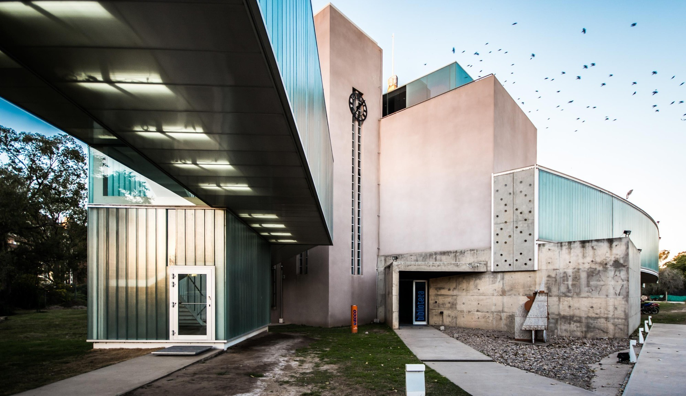
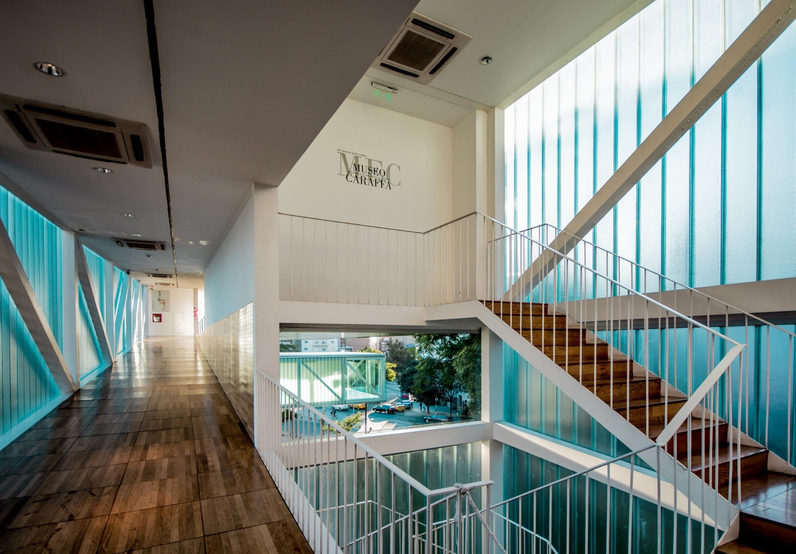

EL MUSEO ESTÁ UBICADO EN EL PARQUE SARMIENTO, EN LA CIUDAD DE CÓRDOBA, ARGENTINA. ES DEPENDIENTE DE LA PROVINCIA DE CÓRDOBA Y FUE CREADO EN 1914 COMO SALAS DE PINTURA DEL MUSEO PROVINCIAL.

DISEÑADO POR J. KRONFUSS CON ESTILO NEOCLÁSICO, FUE REMODELADO DOS VECES DESDE SU INAUGURACIÓN Y ACTUALMENTE, -AMPLIADO CON UN SECTOR DISEÑADO CON LA VOLUMETRÍA CÚBICA DE LA ARQUITECTURA ESTILO INTERNACIONAL-, DISPONE DE NUEVE SALAS DE EXPOSICIÓN.

EN SU INTERIOR SE EXPONEN MUESTRAS TRANSITORIAS DE ARTISTAS DE CÓRDOBA Y ARGENTINA PRINCIPALMENTE. COMO ARCHIVO ARTÍSTICO, SU FUNCIÓN ES LA COLECCIÓN, PRESERVACIÓN, ESTUDIO, PROMOCIÓN Y DIFUSIÓN DE LAS ARTES VISUALES EN CÓRDOBA.